TRENDS
LIVING ROOM
Maximalist Colors and Prints, Vintage Revival & Bringing the Outdoors Back In
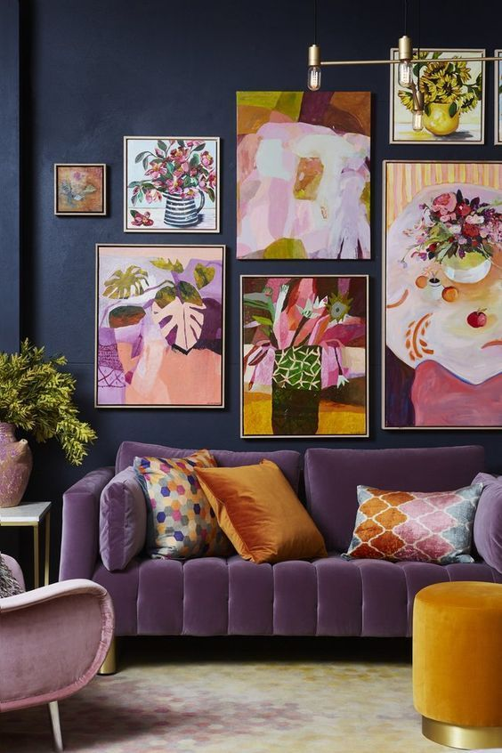
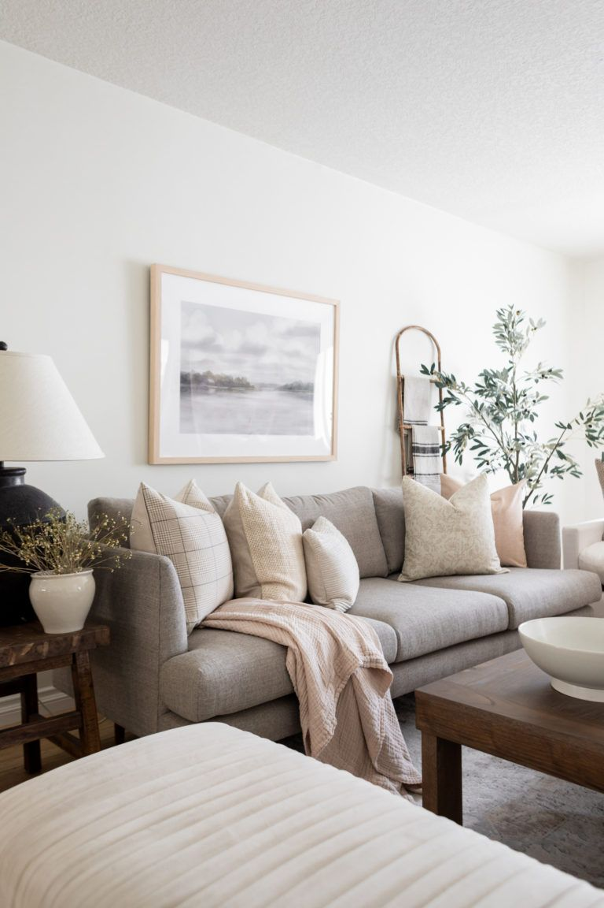
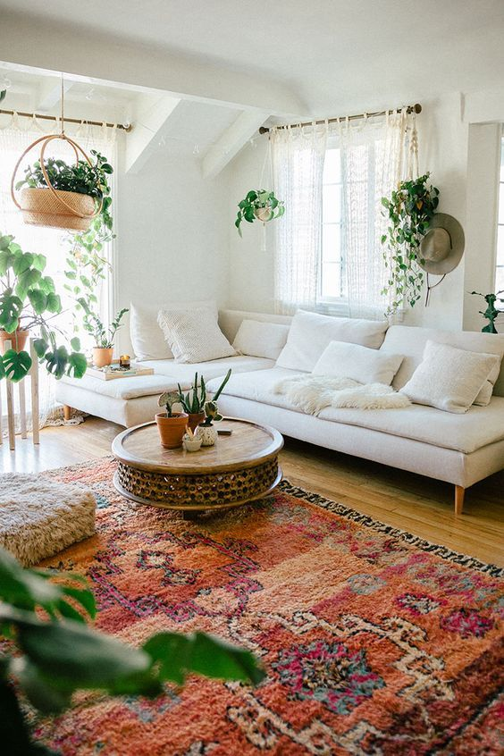
For design enthusiasts, one of the most exciting parts of a new year is seeing what trends it brings. And, fortunately, 2022 has no shortage of them, especially when it comes to the living room. Though it's always important to design a space in a way that feels best to you, trends are a great blueprint to follow or simply an exciting way to jazz up a room that may have been feeling a little dull lately.
KITCHEN
Darker Stains, Monochromatic Spaces & Statement Hoods
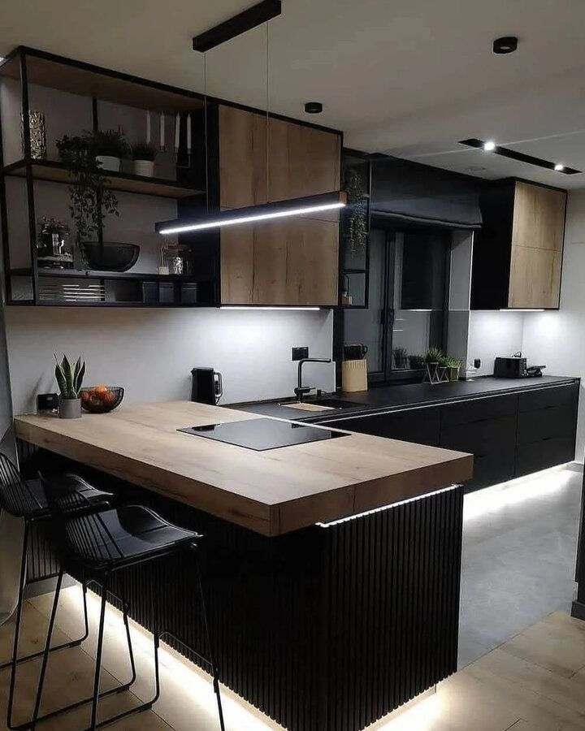 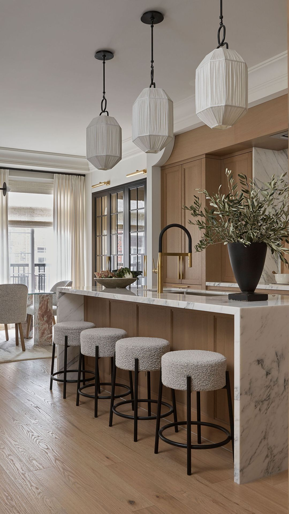
It's always a thrill when interior designers reveal their take on trends that are worth embracing. If you've been thinking of upgrading your kitchen in some way, whether it's complete with a large island or a small, charming layout, you'll appreciate this list of top kitchen trends for 2022. These design pros suggest popular countertop choices, cabinet colors, backsplash tile ideas, sought-after paint options and much more to help you craft your dream kitchen.
BATHROOM
Plenty of Plants, Spa-Like Features & Standout Benches and Stools
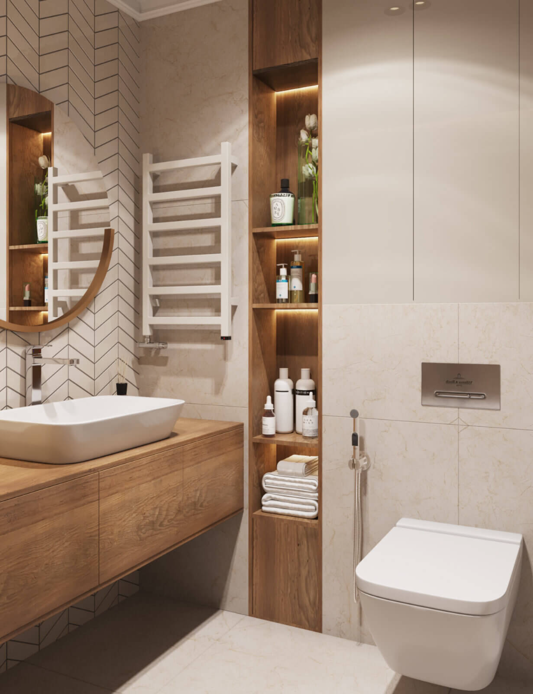 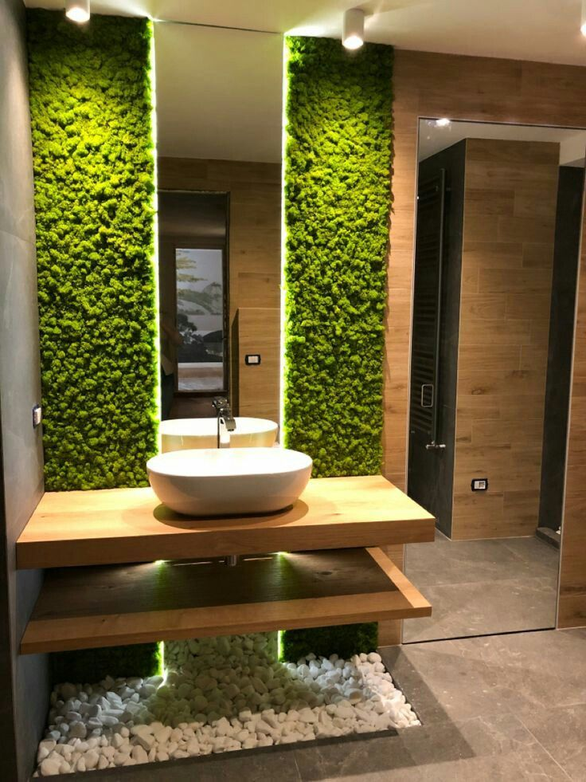
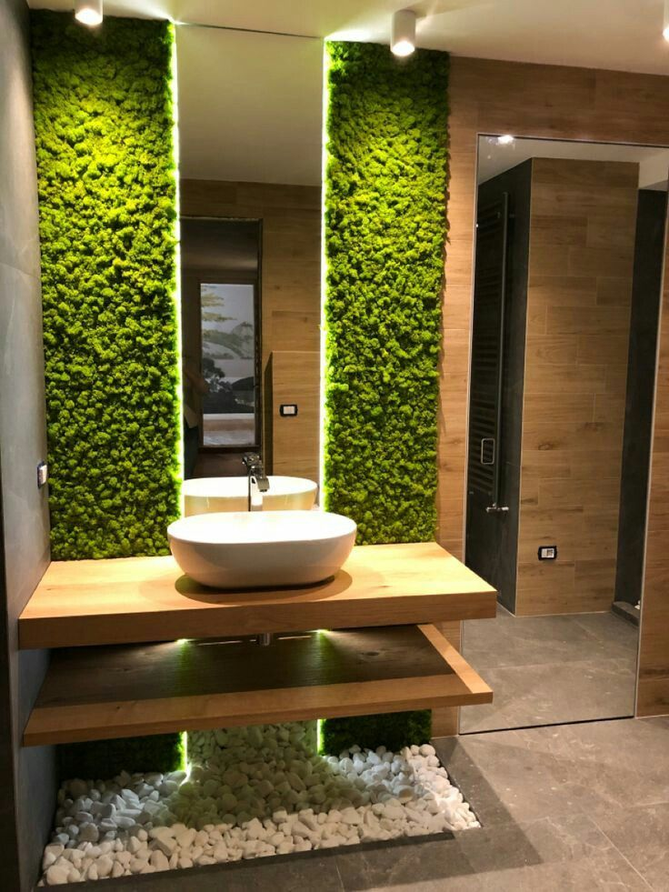
Bathrooms are often an overlooked part of the home, as they're typically not as glamorous (or Instagram-able) as other spaces. But here at House Beautiful, we say: Why not? After all, bathrooms are certainly rooms that everyone uses—which is why their design is just as important as, say, a cozy living room. So, if 2022 will be the year you finally put some effort into upgrading yours, we've got you prepared: Below, House Beautiful has rounded up a list of 10 bathroom trends you should expect to see in 2022, including the return of scenic murals, plenty of plants, and mixing and matching textures. With this as inspiration you won't go wrong in your bathroom reno.
BEDROOM
Color Drenching, Smart Blinds & Ambient Lighting Solutions
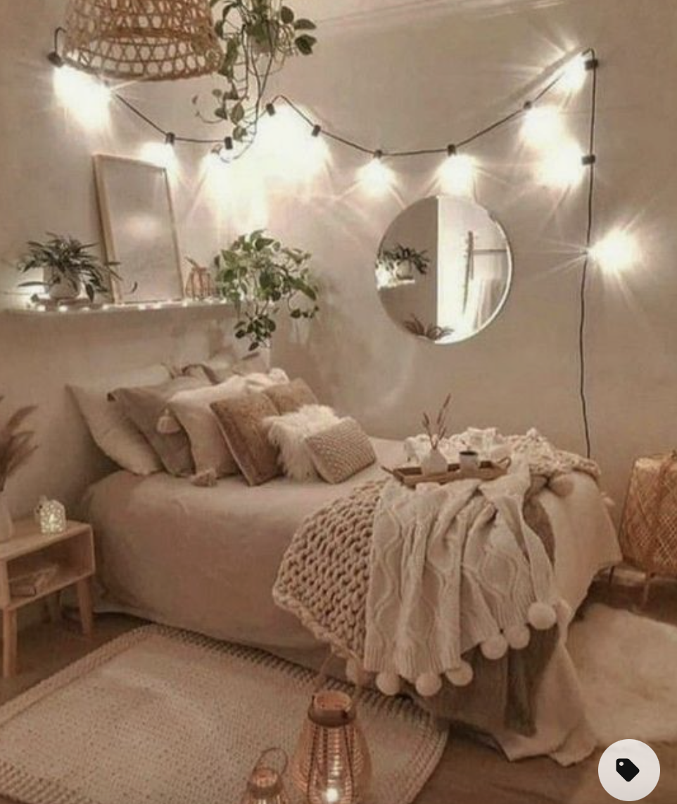 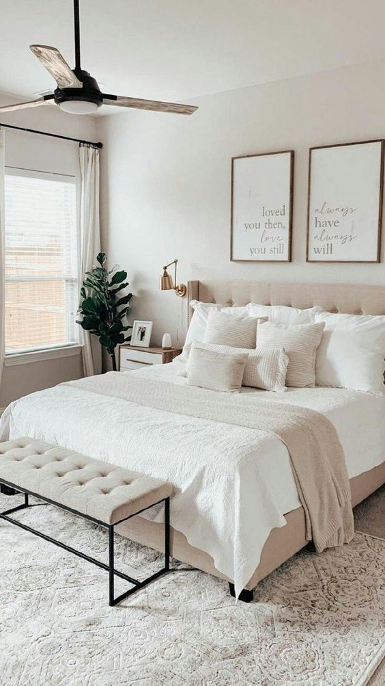 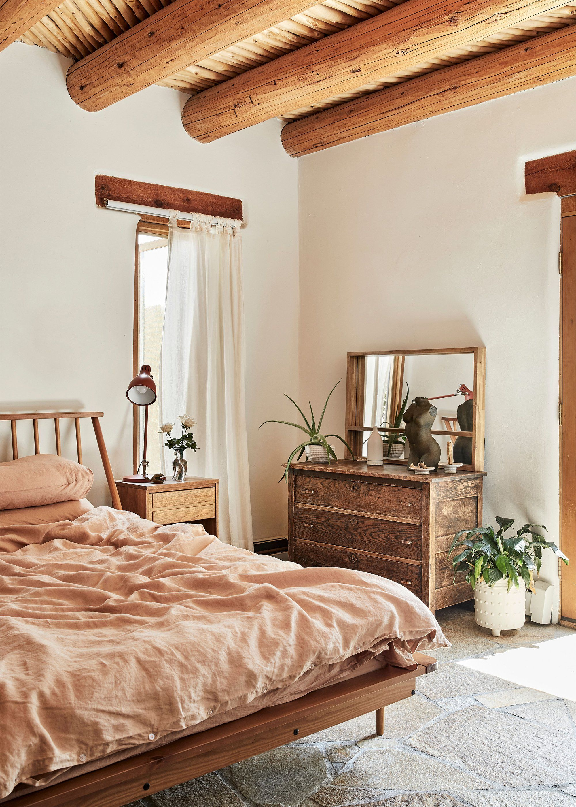The latest bedroom trends for 2022 and beyond welcome sophisticated, thoughtful ways to update your sleep space in style with practical design at the core of each idea. Our bedrooms are one of the most important rooms in the home, integral to our well-being as a space to retreat, relax and, most importantly, reset. The top interior design trends for 2022 won't just help make your home look good, but also help to create a haven in which you feel good too. This year, there's a greater focus on bringing calming natural elements in and pushing stress-inducing factors in the home out, with plenty of stylish solutions for how to de-clutter your home and give you more space to live and grow.
DINING ROOM
Make the Most of Multifunctionality, Seating that's comfortable enough for WFH & Oversized Lighting
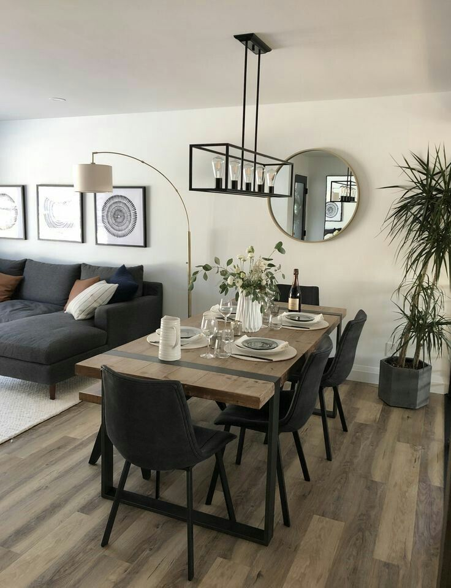 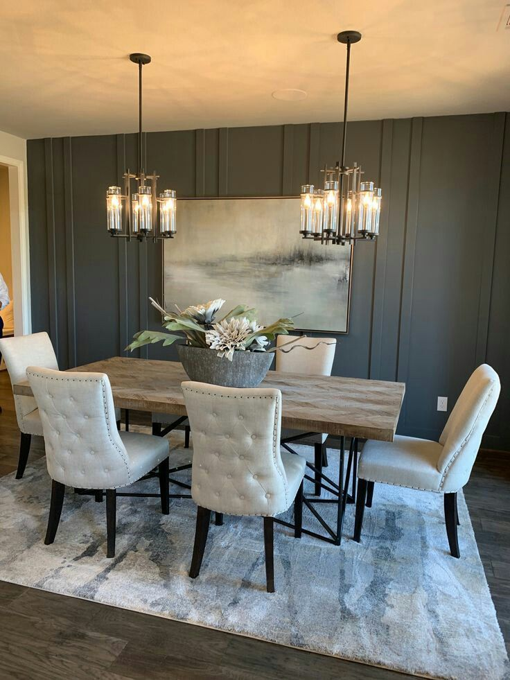
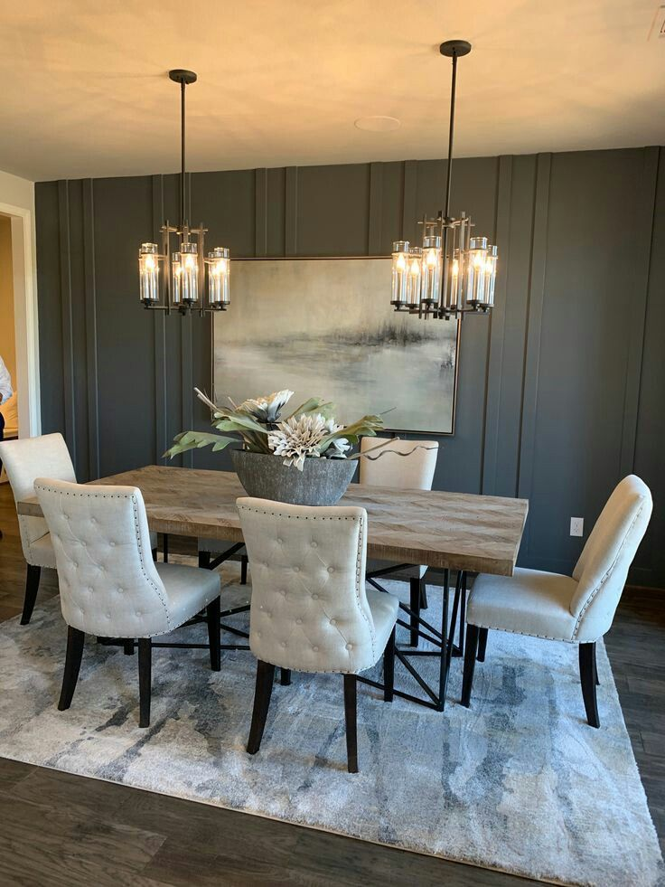
Over the last few years, dining room trends have changed dramatically. For the past 20 years they have been out of fashion, with the popularity of open- and broken-plan layouts meaning they were often knocked through and incorporated into other rooms. But, as a result of the pandemic, there's an increased need for privacy in different spaces in the house, and dining rooms have, according to real estate experts and interior designers, become one of the most sought-after property features in 2022. The once formal dining room that really was only used for dining is now doubling as a home office for home workers or school work. What’s more, there is a general increase in the number of people entertaining at home as we try to reclaim the lost social opportunities of the last few years.